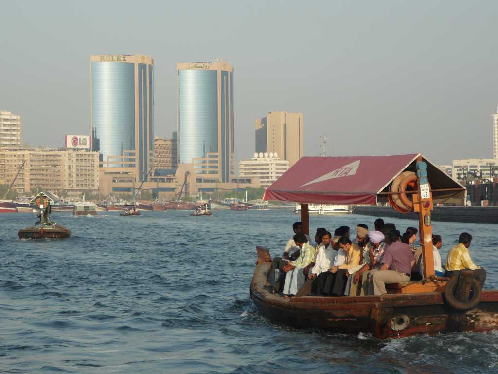
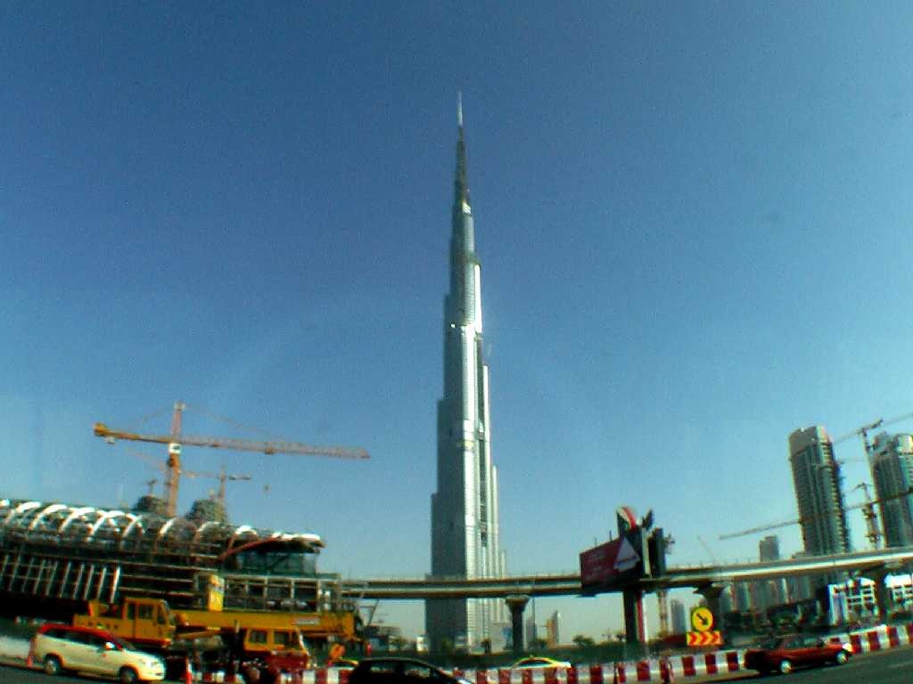
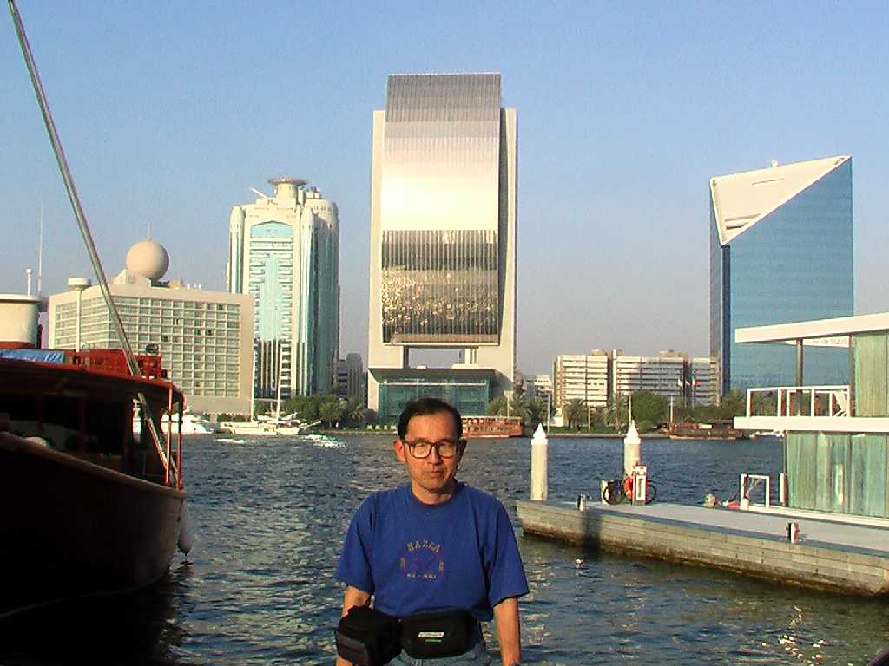
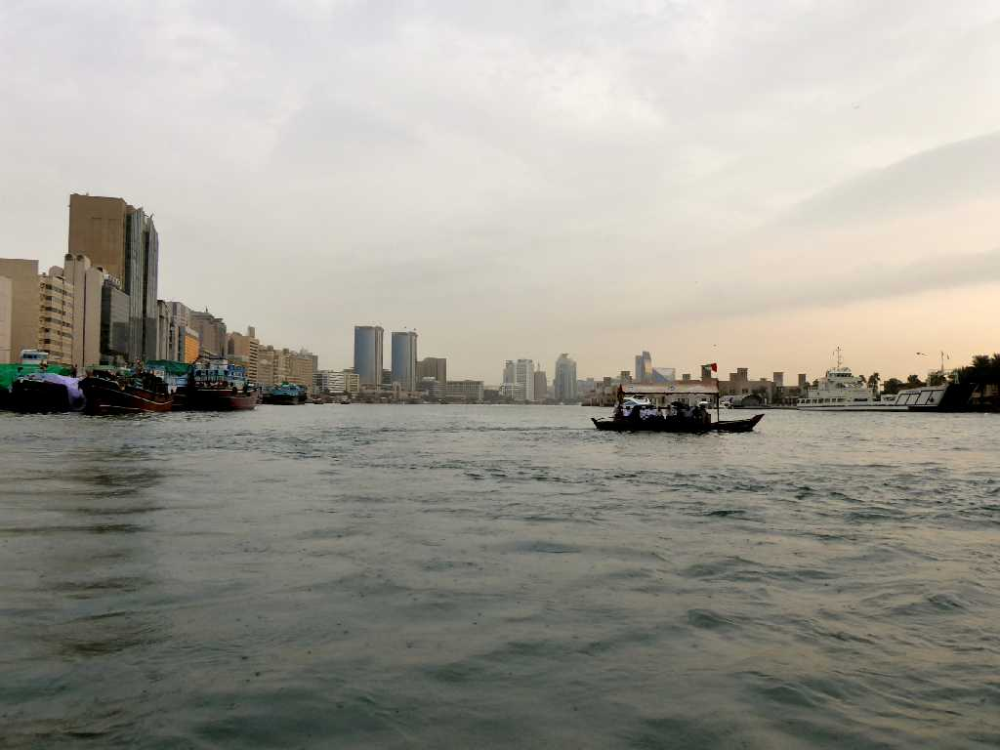
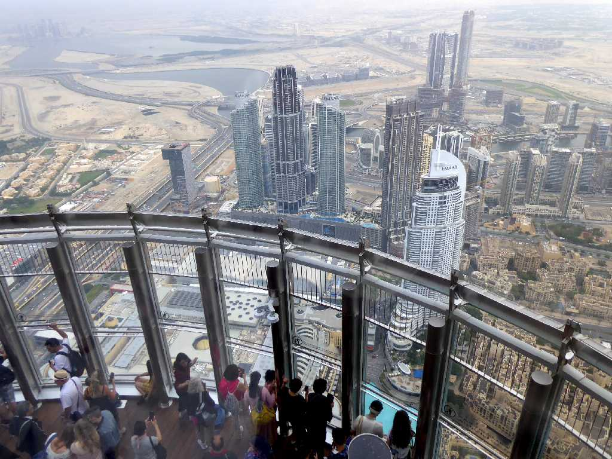
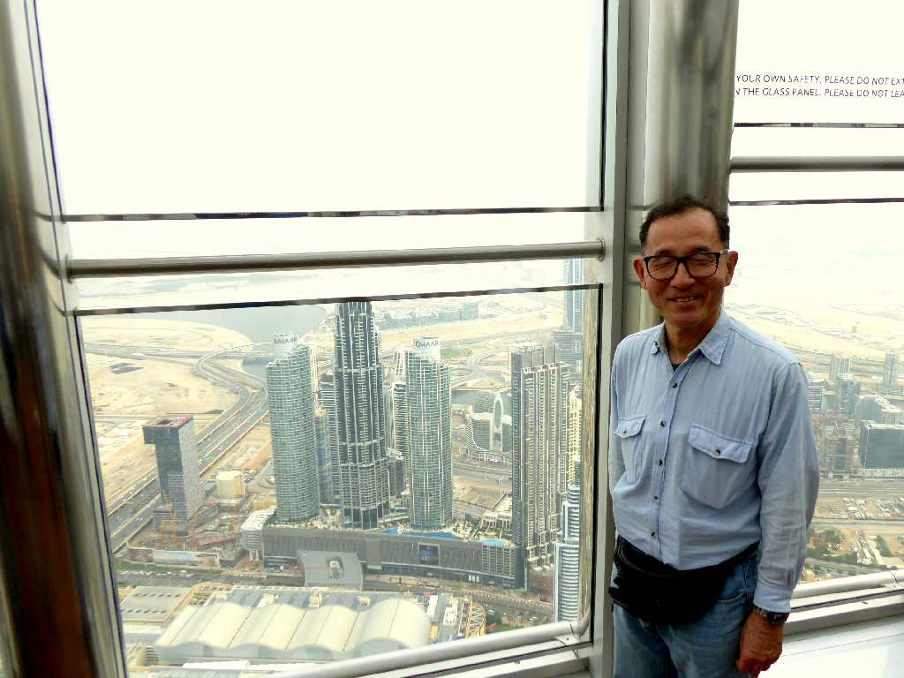
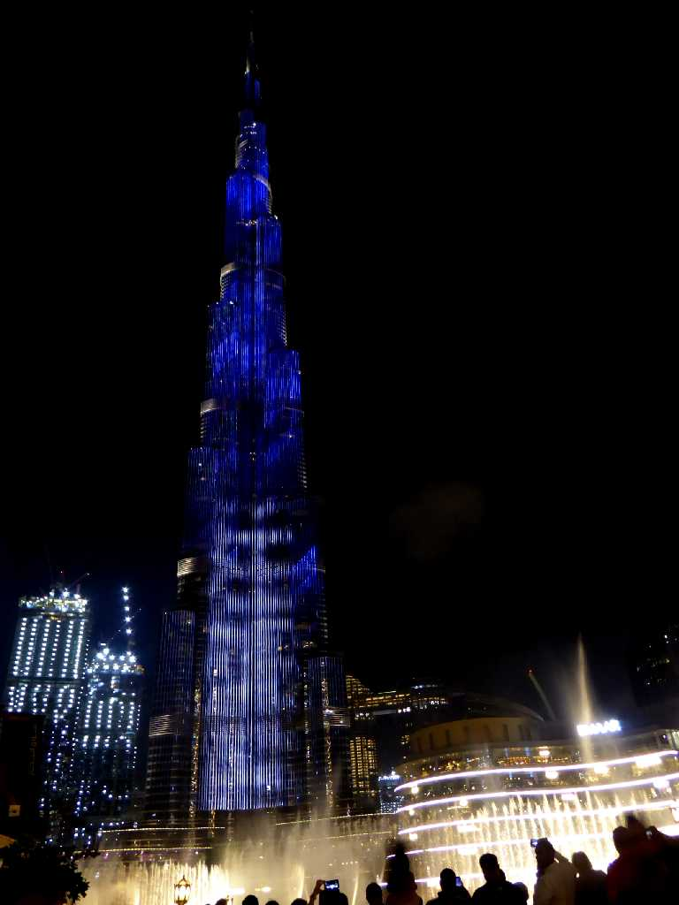

The Creek Dubai
小さな漁村に過ぎなかったが１９８０年代ドバイに経済特区設置とエミレーツ航空就航により外国資本が流入し人と物の集積地となり急速に発展した

Burj Dubai
高さ８２８ｍ地上１６３階建ての世界一高いビルを建設中

January 30 2009 The Creek Dubai

The Creek Dubai
約１０年ぶりの再訪問

555m 148th floor Burj Khalifa
世界一高いビルのブルジュカリファ(旧ブルジュドバイ)が完成し世界一高い高さ５５５mの１４８階の展望台に上る

December 10 2019 Burj Khalifa Dubai

Night View Burj Khalifa
ブルジュカリファ前の噴水ショーを観覧